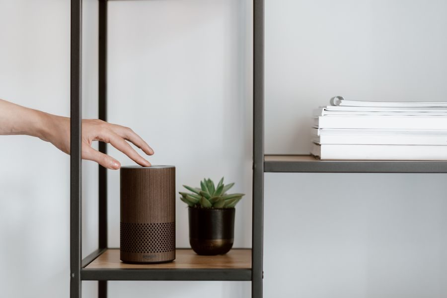

El mejor barato
Para poner un segundo o tercer punto de voz en casa gastando poco. Como altavoz de música, no.
Ver precio actual en AmazonPrecio de hoy, en Amazon. Enlace de afiliado.

| Generación | Echo Pop, presentado en mayo de 2023 |
|---|---|
| Forma | Semiesfera, con el altavoz orientado hacia delante |
| Procesador | AZ2 Neural Edge |
| Pensado para | Dormitorios, pisos pequeños y rincones de la casa |
| Colores | Lavanda, verde azulado, antracita y blanco |
Datos de la ficha oficial del fabricante (press.aboutamazon.com/es — nota de presentación del Echo Pop (mayo de 2023)), consultada el 2026-09-07. No publicamos ningún dato que no podamos comprobar ahí.
No ponemos precios porque cambian cada día. Lo ves actualizado al entrar.
¿Comparándolo con otros? En la guía de altavoces inteligentes: elige el asistente, no el altavoz están las cuatro opciones de la categoría: la mejor, dos de gama media y la mejor barata.